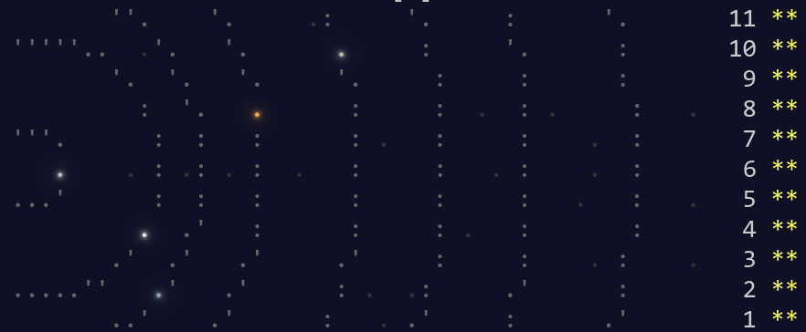

Estimated reading time: 18 minutes
Advent of Code 2019¶
With a touch of sadness, I’ve given up on AoC for this year. I’m writing this is a journal entry, more for myself than others. You’ve been warned!
Note
As always Advent of Code is fun, even when it doesn’t always feel like it. If you’re enjoying it, or currently screaming at it, tip the creator so that we can smile and shout at it next year.
Why quit?¶
The puzzles aren’t my cup of tea this year, but I’m not complaining. Our leader board for the office has twice as many people as last year, so clearly it is my problem and not AoC’s.
The reasons for my lack of enjoyment are largely a general malaise that manifests itself as I chew through the texts. A chunk of my day job resembles the type of puzzles I’ve completed, and if I wanted more of that I could knock some real items off my to–do list.
I have 22 stars for completing both parts of every day so far this year, but I’m taking a break until I have a bit more downtime.
Day 1¶
I jumped in with my toolset from last year, so my solution for part one is:
@aoc_run({
'12': 2,
'14': 2,
'1969': 654,
'100756': 33583,
},
3329926
)
@read_data
def fuel_requirements(inputs: List[str]) -> int:
return sum(int(l) // 3 - 2 for l in inputs)
The aoc_run decorator configures a test runner using the examples from
description, and if provided the second argument confirms my output when I’m
refactoring the code(which I won’t be doing in this instance). If the second
argument isn’t provided, such as when you’re writing your code, it will output
the result for you to submit.
There is nothing interesting with the code for solution itself, possibly beyond
the fact that we’re using //(floor division) to handle the rounding for
us.
This could be performed just as easily with bc and/or num-utils. I had
ultisnips configured to create a skeleton from last year, so only had type
the tests and the sum() call to complete the first part.
Part two leans toward a solution using recursion, and allows us to introduce one
of the many useful tools from Python’s stdlib itertools.takewhile(). This
function consumes an iterator until the given condition no longer holds. In
this instance we’re told to recurse until our additional fuel is just a rounding
error, we can code this with a simple takewhile(lambda x: x > 0,
fuel_recurse(int(l))).
The recursion itself is a simple infinite generator:
def fuel_recurse(n):
mod = n
while True:
mod = mod // 3 - 2
yield mod
The call to takewhile() will slurp up results for each module,
and then we can simply call sum() on them. It only depends on your taste
whether you choose to flatten the results from each module, or whether you call
sum() on per-module sum() results.
In my rush to hit the leaderboard I introduced a really stupid logic bug,
my original REPL code was mod //= 3 - 2. Clearly this won’t work as it is
simply dividing mod by 1. I’d be number one on the leaderboard for
idiocy with a bug that foolish, but luckily I’m too stoopid to find it. I’m
admitting this in the open to remind myself to think a little more in the
following days.
Day 2¶
Annoyingly this problem introduces examples that function differently from your user input. If, like me, you collect the examples for use as a test case you’ll need to treat your output differently to account for the “before running the program, replace position 1 with the value 12 and replace position 2 with the value 2” caveat.
I wasted a moment or two trying to decide whether to do The Right Thing™ or special case the user input. I chose to special case it initially, by implementing a guard based on program length. I’m acknowledging this to make a point, it is very tempting to produce awful hacks in the eternal pursuit of valuable internet points.
def init_computer(inputs: List[str]) -> int:
program = list(extract_numbers(inputs[0]))
if len(program) > 10:
program[1] = 12
program[2] = 2
return run_program(program)[0]
I had to go back and fix it before I tackled part two, as it really annoyed me having to look at it in my editor.
The actual implementation of the IntCode processor is not interesting,
purely a simple FSM. If I was to re-implement it
from scratch I’d probably do the same, but would be more likely to use a hash to
lookup opcode implementations instead of a multi-armed if statement. Mostly
because invalid opcodes are then automatically rejected with a KeyError, but
also because you know it is going to become a hairy McCabe complexity
nightmare if you start adding more branches as the days push on.
The only value to using a multi-armed if is that you can match multiple
opcodes far more easily that you can with simple {opcode: func} approach,
for example:
if opcode in [1, 2]:
argc = 4
p1, p2, r = memory[pos + 1:pos + argc]
memory[r] = [None, add, mul][opcode](memory[p1], memory[p2])
For part two, I was super lazy and simply ran all ten-thousand inputs. Computers are fast enough that even noodling about optimisation for this is a wasteful trade off. Instead, I spent a few minutes making my test runner output colours on failures for the greater good.

Day 3¶
We’ve fallen in to actual thought territory today.
This time last year I mentioned numpy, and that advice holds again today.
If you’re planning on simply bruteforcing the circuit on to a giant grid, expect
a lot of memory pressure and simply switching to numpy will do wonders.
A quick test looks like you’ll be looking at a few gigabytes of memory for the
super naïve method with Python lists.
Personally I just went for storing the intersections in a Dict[Tuple[int,
int], int]. There was a niggling feeling in my mind that part two might
expose a requirement that meant my processing time would explode exponentially,
or there would be a region painting question that would make having access to
the populated grid easier. It wasn’t the case in the end, and we’ll save
breaking out numpy for another day.
I wrote very few lines of code today, although my solution was rather large.
This is the result of simply tugging my Point object with its pre-written
Manhattan distance methods from 2018’s Chronal Coordinates solution. I’m
unsure whether this makes me happy for code reuse or sad for cheating the puzzle
a little.
The only interesting element from today is relying on a bunch of default
functionality that Python gives us. Instead of needing to write our own matcher
to find the overlapping wires, we can simply call wire1.keys() & wire2 and
Python gives us the intersection points directly.
Day 4¶
We’re attempting to find a six digit password, the problem space is small enough that we can just code the rules without thought for speed. Simply iterate over the given range, while treating the numbers as strings.
Rule three states “two adjacent digits are the same”. That is a simple regex
away, re.search() allows us to search for (\d)\1 to find any
duplicated value. Job done. If you were so inclined you could use
groupby() to pluck repeats out instead.
Rule four says “Going from left to right, the digits never decrease; they only ever increase or stay the same”. Quickest answer was just to compare the password to a sorted version of itself, if they’re equal then the password passes.
sorted(s) == list(s)
Clearly, there is a bunch of ugly type shifting going on here; int from
range(), str from int, list from str.
However, it just isn’t worth the effort to improve this. Arguably, you could
iterate over the characters manually to avoid the final conversion but
timeit shows it takes twice as long anyway.
all(n1 <= n2 for n1, n2 in zip(s, s[1:]))
Tip
Using all() we’re short-circuiting the failure case in exactly the
same way as the sorted() comparison. While all(), any(),
and the tools in functools aren’t fashionable in Python circles
they can often make a whole lot of code more readable.
Part two slightly modified the third rule to say “the two adjacent matching
digits are not part of a larger group of matching digits”. Laziest method
won again, Python provides a Counter object that does all
the work for us:
if 2 not in collections.Counter(s):
continue
At another time I may have reached for Counter in the first part. I find it
quite interesting how a previous unrelated task colours the work one produces on
an another.
If you’re allergic to RegEx look away now, but… You can still perform the
match by using a positive look behind to effectually make the match available
before you saw it. (\d)(?<!\1.)\1(?!\1), or with the benefit of
re.VERBOSE:
matcher = re.compile(r"""
(\d) # a digit
(?<!\1.) # check character *before* doesn't match
\1 # repeated character
(?!\1) # check character *after* doesn't match
""", re.VERBOSE)
We wouldn’t want to do that though, as it makes kittens weep.
Day 5¶
To be honest, today’s puzzle bored me. It was just a matter of translating
a few more rules in to our IntCode state machine. I may have been tempted
to skip it for now, but all AoC players know we’ll need to implement it all if
we want to continue with further days.
I can’t get over how impenetrable the wording felt to me. I think it is simply the choice of using non-standard “simple” wording to make the text more approachable to non-CS people that left me having to re-read paragraphs multiple times. This isn’t a complaint aimed at the creator, more an admission of one of my shortcomings1.
Instead of simply expanding my Python implementation from day two, I took the architecture astronaut approach and created a standalone nim implementation that was far faster. It also provides the benefit of being usable regardless of what language I choose to attack a future puzzle in, or even to use from the shell in a pipeline.
If you’re into such shenanigans yourself, nimpy provides a really nice method to do so. You can create your standalone binary implementing a task, but also make it usable directly from Python with a simple import.

I think this is probably my tip of the day, if you find a puzzle a little
uninteresting just make it more interesting. Implementing the nim version
with human-readable and JSON output,
MovieOS memory display while running, tacking on seqdiag output for bug
inspection was glossy, and optimising it in ridiculous ways with branch
prediction to take some advantage of all my CPU cores was a lot of fun.
Day 6¶
Much like my experience with day 7 from last year, this is a no-brainer if you recognise the problem and know where to find a pre-made solution.
NetworkX is a Python package for the creation, manipulation, and study of the structure, dynamics, and functions of complex networks.
Today that solution comes in the form of networkx, an incredibly useful package
for mangling graph structures at scale. We can create a directed graph from our
puzzle input by splitting lines on ). We can then use networkx to count
up all the orbits:
orbits = nx.DiGraph(line.split(')') for l in inputs)
return sum(len(nx.ancestors(orbits, n)) for n in orbits.nodes())
For part two we need to find the shortest path length, and for that we only
really need to find an underscore or two:
return nx.shortest_path_length(orbits.to_undirected(), 'YOU', 'SAN') - 2
If you’re interested in approaching the problem from a little further down, the Python docs have an interesting essay on implementing graph structures just for you.
Note
graphviz provides all the required functionality too, and the input is trivially convertible to a directed graph with a sed. If you’re only aware of simple dot usage I really recommend digging in to the documentation for the many other tools in the package. Today you’d have wanted to read about ccomps, dijkstra, and maybe nop for OCD-compliance.
sed -e "1idigraph {" -e '$a}' \
-e 's,\(.*\))\(.*\),"\1"->"\2",' day06.txt \
| nop
Day 7¶
Back in day five I sounded like a fool for implementing
standalone IntCode interpreters, today I inhale the plaudits as
a double-bacon-genius.
Part one requires us to simply tie a few interpreters together. I decided to do
this from my shell, as it didn’t look that difficult. We need to test all
permutations of {0…4}, and there are plenty ways to do this. I’m going to
use crunch with the -p[ermutations] option as it was already installed:
choices=($(crunch 0 0 -p {0..4}))
We’ll now want to iterate over the array testing our amplifiers, which I chose
to do with a loop because it was quicker than adding more argument parsing to my
IntCode interpreter to make this possible with a pipe chain.
rv=0
for choice ($choices) {
for input (${(ps::)choice}) {
rv=$(./intcode inputs/day07.txt <<< $input$'\n'$rv)
}
echo $rv
}
There are a couple of things going on here that aren’t all that common. First, I’m a zsh user and I tend to prefer the short syntax format. It is functionally identical to “standard” syntax, but I find it more clear.
Second, we can take advantage of zsh’s parameter expansion flags
to split our five character string in to an array of individual characters. The
${(ps::)choice} construct tells zsh to split the string with an empty
delimiter, but the normal way to use it would be to split based on a character
such as a comma(${(ps:,:)csv_record})
Finally, we’re using a here-string to feed stdin for our interpreter. The
oddness with $'\n' is a quoting form that tells zsh to interpret the text
as it would for print, that is it expands the newline escape sequence for
us.
With that block written we now have each possible output, and the original
question told us to provide the highest value as our answer. num-utils
provides numbound for exactly this sort of purpose, and simply tacking |
numbound on to our outerloop gives us the final result for part one.
Part two is simply a matter of changing the input and loop condition, and contains nothing new or interesting. If you’re doing something similar I strongly suggest getting to know the fc builtin, which allows you to edit your shell session in a real editor instead of needing to manually switch between your editor and terminal when composing more complex shell blocks.
Day 8¶
We’re going to want a chunker to implement this, and oddly for something so
common Python doesn’t seem to provide one2. Perhaps the reason is how
simple it is to implement, but then what would explain math.copysign()?
def chunks(l: List, n: int) -> Generator[List, None, None]:
"""Generate n-sized chunks from list."""
for i in range(0, len(l), n):
yield l[i:i + n]
For part one all we need to do is count “pixel” values in each frame, and we
once again use a Counter to do the lifting:
layers = [Counter(l) for l in chunks(inputs[0], 25 * 6)]
Then we need to select the layer with the fewest zeroes, and calculate a rudimentary checksum for the elves to verify:
zero_layer = min(layers, key=itemgetter(0))
return zero_layer[1] * zero_layer[2]
My point for showing the whole code for such a simple task is to reiterate the point I’m making a lot, if you’re aiming for speed then be sure to leverage the tools that are available to you. This entire solution can be REPL’d in less than five lines without even resorting to code golfing.
For part two we need to iterate over the layers applying a basic rule. As we’re told to iterate in reverse order, we simply skip “transparent” pixels and only apply black and white. Once again taking advantage of built-ins allows us to write basically zero code:
for layer in reversed(layers):
for n, p in enumerate(layer):
if p != 2:
image[n] = ' █'[p]
Those four lines were my first attempt in the REPL, and I only burst the
if statement for readability when I moved it to a file.
As I wrote less than ten lines to submit my answers, I decided to make a little more work for myself. I give you images of images…
A more interesting question might be: without reversing the frames how quickly can we apply OCR to guess the incomplete text? Had the input data been larger it might have been an interesting approach to solving this puzzle. Install tesseract, figure it out and drop me a mail.
Day 9¶
Hrmmph. The puzzle text took me longer to read than the extra opcode and mode
took to add to my interpreter. There was nothing new or noteworthy in the
implmentation either, just another state variable and switch arm.
Day 10¶
Part one was easy enough, after having put in some legwork to re-read topics
I have a tendancy to forget through lack of use. I took a ten minute diversion
to refresh myself on polar coordinates3, then a little cmath
refresher.
Research over. All we need to do is map the asteroid coordinates as complex
numbers, then iterate with more stdlib magic to count unique angles. Dumping
the output of cmath.phase() in to a set comprehension strips the
duplicates for us. We can think of it as a naïve form of ray casting to
“hide” the hidden asteroids.
I think the interesting part of today’s puzzle is yet another stdlib reminder.
Should you wish to use cartesian coordinates to operate on the asteroids you
have pre-built gcd() or Fraction functionality
for your angle representations, and if you opt for 1-dimensional polar
coordinates you have cmath functions at your fingertips.
And iff you outgrow the stdlib the Python ecosystem is great. As an example, you could read the whole input in to a numpy.array for the map. Then take advantage of numpy.nonzero() to extract the asteroid coordinates to iterate over.
The other thing I learnt is my co-worker Karl is amazing, his solution included a pygame-based radar sweep display of the asteroid field.
Day 11¶
I’ve kind of lost interest today. This puzzle was largely just tying your
IntCode interpreter in to a Logo-esque walker from various other puzzles,
it felt more like busywork than an actual challenge.
I’m pretty sure I’ll come back to AoC 2019 during my Winterval break, but that is it for now.
Tips¶
I’m mostly repeating my tips from last year and the year before.
Don’t use this as an excuse to learn a new language. The puzzles aren’t really complicated enough to learn a new language beyond basic grammar. You may as well use it as an excuse to explore new features in a language you already know, or as an excuse to explore the standard library of your chosen language some more.
Read the problems deeply. The artificial nature of the puzzles often elides important information, or at least can often feel that way. These are puzzles so you should expect some vexation, and skimming for speed will make this worse!
If you’re going for the leaderboard you need to be really fast, so: Use fast languages, be all over your chosen weapon’s standard library, and use your editor’s snippets well. Every. Second. Counts.
And finally, keep your old solutions around either in files or in your REPL’s history as you’ll probably end up revisiting them, if not this year then maybe in the next.
Hopes for 2020?¶
Repeating number one from last year: That the options to pay for it are better next year. Each year I have to find a friend to make a donation in my place as the payment options are weak. It would be nice to not have to do so, and limiting payments to PayPal and Coinbase must be putting others off a donation entirely.
Number two? That it returns. I know I’ve moaned a couple of times in this document, but that is the joy of puzzles. If they’re not annoying you then they’re not challenging enough.
Footnotes
- 1
I actually EBNF’d the spec in my editor to pin down the rules from the prose. In part because my editor is configured with snippets to quickly hammer out EBNF rules.
- 2
If you know of a way to perform this with the standard library drop me a mail, I’d love to hear about it!
- 3
I literally only have to consider polar coordinates once a year. Why? Simple, AoC always has a puzzle or two which benefit from using them.
Authenticate this page by pasting this signature into Keybase.
Have a suggestion or see a typo? Edit this page